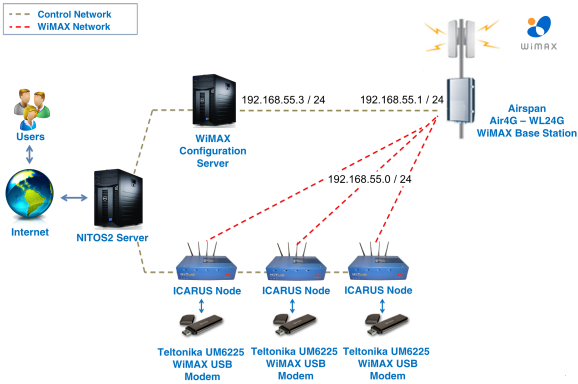

WiMAX¶
1.Basics¶
At the beggining, you will see how to connect and use the WiMAX testbed. You’ll also see how to develop and run a simple experiment where the WiMAX interface is properly configured and how to generate traffic between two nodes.
2.Prerequisties¶
Accessing/Provisioning Resources¶
Warning
You have to connect to NITOS Server 2 nitlab2.inf.uth.gr!
Warning
This section of the documentation is based in OMF 5.4!
You can use your NITOS account to access the NITOS Server 2. Just open a secure shell and write:
ssh slice_name@nitlab2.inf.uth.gr
| Example: | i.e syiordan@nitlab2.inf.uth.gr |
|---|
3.Experimental Topology¶
The topology we are examining in this tutorial is a central Base Station unit, able to route requests from an internal WiMAX network to the internet.

- The Base Station is using the 192.168.55.1 IP address
- Multiple clients use the 192.168.55.0/24 subnet to communicate with the Base Station
- Packets routed through the Base Station are sent over the internet through a NAT translation
However, the devices that we currently use do not allow us to interface directly the WiMAX device. If you send the following command
root@node044:~# ifconfig tel0
you will get an output similar to the following:
tel0 Link encap:Ethernet HWaddr 00:1e:42:02:18:72
inet addr:192.168.0.8 Bcast:192.168.0.255 Mask:255.255.255.0
inet6 addr: fe80::21e:42ff:fe02:1872/64 Scope:Link
UP BROADCAST RUNNING MULTICAST MTU:1500 Metric:1
RX packets:19939 errors:0 dropped:0 overruns:0 frame:0
TX packets:325172 errors:0 dropped:0 overruns:0 carrier:0
collisions:0 txqueuelen:1000
RX bytes:6477672 (6.4 MB) TX bytes:486501878 (486.5 MB)
Since the WiMAX devices need a rather complex configuration in order to allow access to the WiMAX interfaces of another node, you have to issue the following command:
root@node044:~# wmxfix
4.Connecting to the WiMAX Network¶
In order to connect to the Base Station, issue the following commands:
wget --http-user admin --http-password admin -qO - "http://192.168.0.1/cgi/cli?stopSs"
wget --http-user admin --http-password admin -qO - "http://192.168.0.1/cgi/cli?addChannel frequency=2590000 bandwidth=10"
wget --http-user admin --http-password admin -qO - "http://192.168.0.1/cgi/cli?startSs"
The first one, instructs the dongle to disconnect from any network that it is attached on. The second command, instructs the dongle to use the WiMAX channel at 2590MHz with a 10MHz channel bandwidth. Finally, with the third command the dongle connects to the NITOS WiMAX network. You can verify that the dongle has been connected, by sending the following command:
ping 192.168.55.3
If the host responds, you are connected to the Base Station. Host 192.168.55.3 is the server behind the Base Station, responsible for configuring it and routing the traffic coming from it.
5.Set up experimentation properties of the BS¶
Before starting an experiment with the WiMAX testbed, the user has to configure the BS with his/her desired parameters. There is a basic command available to get or set the required parameters to the BS. This is the ‘wget’ command.
As soon as the parameters are set, the experimenter can submit a new Experiment Definition(ED) written in OMF Experiment Description Language to the OMF’s EC.
WiMAX services are seperated in two categories. The services of the first one are used to configure the BS and those of the other one are used to configure the mobile clients. A description of these services is available to the user, through the command:
wget -qO- "http://wimaxrf:5054/wimaxrf/"
Services for the BS¶
Note
Set ARQ parameters
Note
Set HARQ parameters
Note
Set SECURITY parameters
Note
Set WIRELESS parameters
Note
Set ZONE parameters
Note
Get Basestation Static Parameter
Note
Set Basestation Static Parameter
wget -qO- " http://wimaxrf:5054/wimaxrf/bs/set?txpower=40 "
wget -qO- " http://wimaxrf:5054/wimaxrf/bs/get?txpower "
Note
In order to setup the BS to the default settings.
Note
Get information about the Base Station
Note
Set Base Station in service state
Note
Set Base Station to maintenance state
Note
Restart the base station.
Note
Get status of WiMAX RF service
Services for the mobile clients¶
Note
You can set/get MOBILE parameters using the mobileclient service only
Note
Get information about the mobile station
Note
Reregister Mobile station
Note
Get all registered mobiles stations
Warning
Once you have logged in, you should setup the base station to the default settings, as its configuration might have been altered from its normal behavior by any previous experimenter.
wget -qO- " http://wimaxrf:5054/wimaxrf/bs/default "
wget -qO- " http://wimaxrf:5054/wimaxrf/bs/restart "
6.Developing the experiment¶
To run an experiment with OMF, you first need to describe it into an Experiment Description (ED). An ED is a file/script that is supplied as an input to the Experiment Controller (EC). It contains a detailed description of the resources involved in an experiment and the sets of actions to perform in order to realize that experiment. An ED is written using the OMF Experiment Description Language (OEDL).
The ED for our experiment:
1 2 3 4 5 6 7 8 9 10 11 12 13 14 15 16 17 18 19 20 21 22 23 24 25 26 27 28 29 30 31 32 33 34 35 36 37 38 | defProperty('runtime',20,"Time in second for the experiment is to run")
defProperty('client',"192.168.55.48","IP address of iperf server")
defProperty('interval', "1", "Interval of Iperf measurements")
defProperty('sender', 'omf.nitos.node043', "ID of sender node")
defProperty('receiver', 'omf.nitos.node048', "ID of sender node")
defGroup('Sender', property.sender) do | node |
node.net.t0.channel = "2590000,10"
node.addApplication("test:app:iperf-5.4") do | app |
app.setProperty('client', property.client)
app.setProperty('interval', property.interval)
app.setProperty('time', property.runtime)
app.setProperty('udp', true)
app.measure('transfer', :samples =>1)
end
end
defGroup('Receiver', property.receiver) do | node |
node.net.t0.channel = "2590000,10"
node.addApplication("test:app:iperf-5.4") do | app |
app.setProperty('server', true)
app.setProperty('interval', property.interval)
app.setProperty('udp', true)
app.measure('transfer', :samples =>1)
end
end
onEvent(:ALL_UP_AND_INSTALLED) do | event |
wait 50
info "This is an iperf experiment using a teltonika modem"
allGroups.startApplications
wait property.runtime
wait 2
allGroups.stopApplications
wait 2
Experiment.done
end
|
7.Running Experiment¶
You can run it from the testbed server with the following command:
omf-5.4 exec experiment.rb --slice your_username
When running the EC with the above command, you should see an output similar to this :
INFO NodeHandler: OMF Experiment Controller 5.4 (git 3105a52)
INFO NodeHandler: Slice ID: ardadouk
INFO NodeHandler: Experiment ID: ardadouk-2014-09-15t17.13.25+03.00
INFO NodeHandler: Message authentication is disabled
INFO Experiment: load system:exp:stdlib
INFO property.resetDelay: resetDelay = 90 (Fixnum)
INFO property.resetTries: resetTries = 1 (Fixnum)
INFO Experiment: load system:exp:eventlib
INFO Experiment: load wimax_experiment.rb
INFO property.runtime: runtime = 20 (Fixnum)
INFO property.client: client = "192.168.55.47" (String)
INFO property.interval: interval = "1" (String)
INFO property.sender: sender = "omf.nitos.node046" (String)
INFO property.receiver: receiver = "omf.nitos.node047" (String)
INFO Topology: Loading topology 'omf.nitos.node046'.
INFO Topology: Loading topology 'omf.nitos.node047'.
INFO Experiment: Switching ON resources which are OFF
INFO ALL_UP_AND_INSTALLED: Event triggered. Starting the associated tasks.
INFO exp: Request from Experiment Script: Wait for 50s....
INFO exp: This is an iperf experiment using a teltonika modem
INFO exp: Request from Experiment Script: Wait for 20s....
INFO exp: Request from Experiment Script: Wait for 2s....
INFO exp: Request from Experiment Script: Wait for 2s....
INFO EXPERIMENT_DONE: Event triggered. Starting the associated tasks.
INFO NodeHandler:
INFO NodeHandler: Shutting down experiment, please wait...
INFO NodeHandler:
INFO run: Experiment ardadouk-2014-09-15t17.13.25+03.00 finished after 1:20
8.Accessing Results¶
You can access your results in /tmp file with sqlite3.
Type a command similar to this:
ardadouk@nitlab2:~# sqlite3 /tmp/ardadouk-2014-09-15t17.13.25+03.00.sq3
SQLite version 3.7.9 2011-11-01 00:52:41
Enter ".help" for instructions
Enter SQL statements terminated with a ";"
sqlite> .dump
PRAGMA foreign_keys=OFF;
BEGIN TRANSACTION;
CREATE TABLE _senders (name TEXT PRIMARY KEY, id INTEGER UNIQUE);
INSERT INTO "_senders" VALUES('Sender',1);
CREATE TABLE _experiment_metadata (key TEXT PRIMARY KEY, value TEXT);
INSERT INTO "_experiment_metadata" VALUES('start_time','1410801183');
CREATE TABLE "iperf_transfer" (oml_sender_id INTEGER, oml_seq INTEGER, oml_ts_client REAL, oml_ts_server REAL, "pid" INTEGER,
"connection_id" INTEGER, "begin_interval" REAL, "end_interval" REAL, "size" UNSIGNED BIGINT);
INSERT INTO "iperf_transfer" VALUES(1,1,1.12967199832201,-10720.634378,1305,4,0.0,1.0,132300);
INSERT INTO "iperf_transfer" VALUES(1,2,2.11843899637461,-10719.670295,1305,4,1.0,2.0,130830);
INSERT INTO "iperf_transfer" VALUES(1,3,3.11740499734879,-10718.671336,1305,4,2.0,3.0,130830);
INSERT INTO "iperf_transfer" VALUES(1,4,4.11637899279594,-10717.672453,1305,4,3.0,4.0,130830);
INSERT INTO "iperf_transfer" VALUES(1,5,5.11532099545002,-10716.673515,1305,4,4.0,5.0,130830);
INSERT INTO "iperf_transfer" VALUES(1,6,6.11408699303865,-10715.674698,1305,4,5.0,6.0,130830);
INSERT INTO "iperf_transfer" VALUES(1,7,7.12316399812698,-10714.665473,1305,4,6.0,7.0,132300);
INSERT INTO "iperf_transfer" VALUES(1,8,8.12204399704933,-10713.666893,1305,4,7.0,8.0,130830);
INSERT INTO "iperf_transfer" VALUES(1,9,9.120899990201,-10712.668072,1305,4,8.0,9.0,130830);
INSERT INTO "iperf_transfer" VALUES(1,10,10.1199389994144,-10711.668989,1305,4,9.0,10.0,130830);
INSERT INTO "iperf_transfer" VALUES(1,11,11.1189429908991,-10710.670015,1305,4,10.0,11.0,130830);
INSERT INTO "iperf_transfer" VALUES(1,12,12.1177649945021,-10709.671234,1305,4,11.0,12.0,130830);
INSERT INTO "iperf_transfer" VALUES(1,13,13.1268289983273,-10708.662183,1305,4,12.0,13.0,132300);
INSERT INTO "iperf_transfer" VALUES(1,14,14.1257529854774,-10707.663297,1305,4,13.0,14.0,130830);
INSERT INTO "iperf_transfer" VALUES(1,15,15.1244789958,-10706.664623,1305,4,14.0,15.0,130830);
INSERT INTO "iperf_transfer" VALUES(1,16,16.1233379840851,-10705.66573,1305,4,15.0,16.0,130830);
INSERT INTO "iperf_transfer" VALUES(1,17,17.1221949756145,-10704.66691,1305,4,16.0,17.0,130830);
INSERT INTO "iperf_transfer" VALUES(1,18,18.1109179854393,-10703.678253,1305,4,17.0,18.0,130830);
INSERT INTO "iperf_transfer" VALUES(1,19,19.1300239861012,-10702.659141,1305,4,18.0,19.0,132300);
INSERT INTO "iperf_transfer" VALUES(1,20,20.1187719702721,-10701.670474,1305,4,19.0,20.0,130830);
COMMIT;